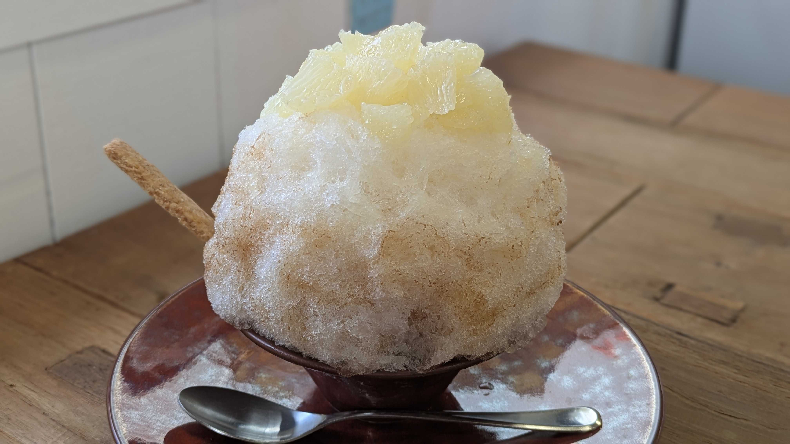
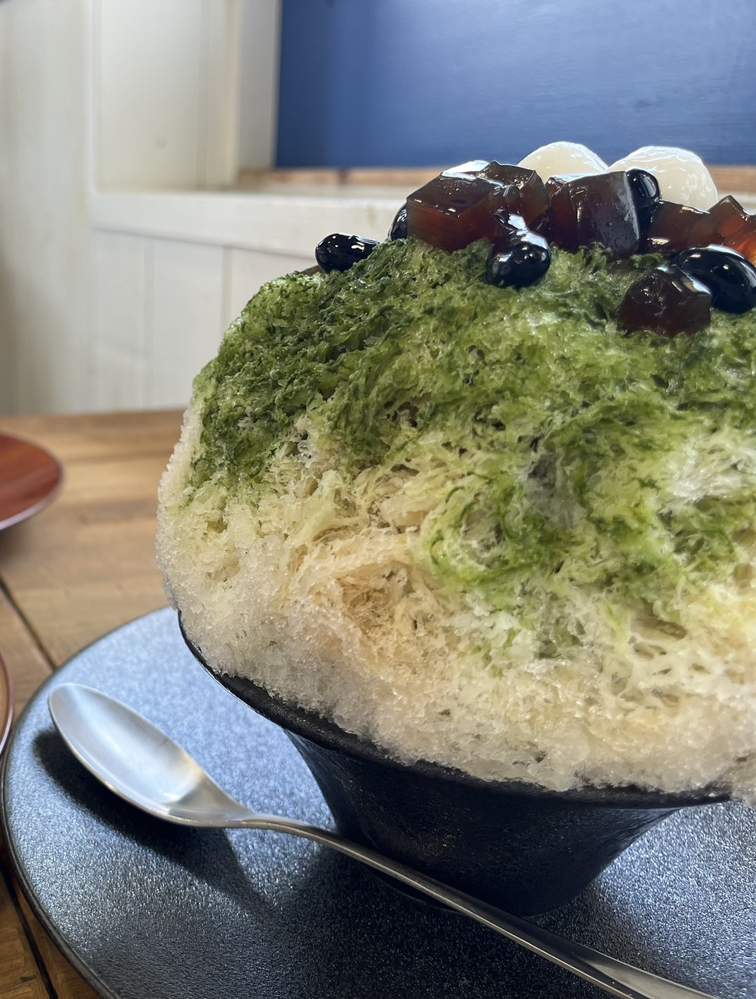
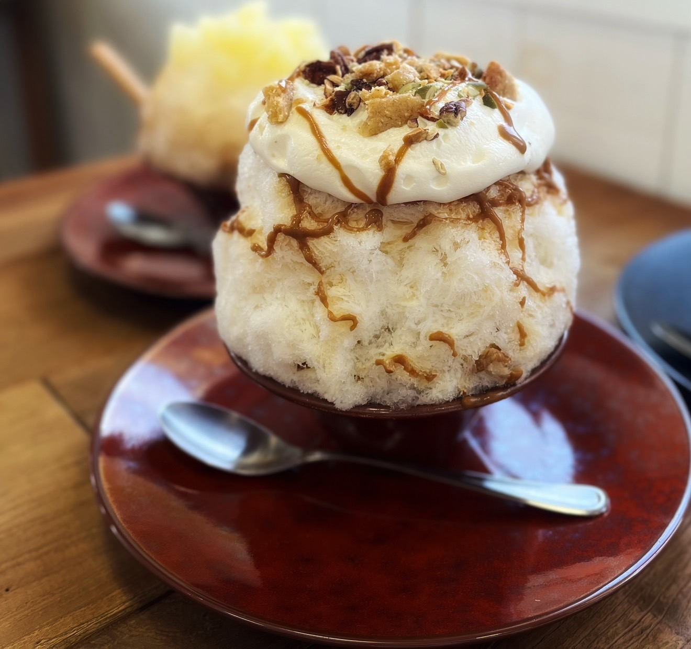

かき氷専門店ウミナゴミ
おすすめメニュー

グレープフルーツ・グレイ
果実のさわやかさと、紅茶の香りに癒される。大人のためのご褒美かき氷。

黒蜜抹茶
宮崎産の有機抹茶と黒蜜を使った王道の和スイーツ。和の魅力がぎゅっと詰まった王道の組み合わせ。

塩キャラメル
とろけるキャラメルの甘さに、ほんのり塩気がアクセント。深みのある味わいが広がる、贅沢なひととき。
住所
名古屋市天白区鴻の巣1丁目1-1311ココウォーク店内
名古屋市天白区鴻の巣1丁目1-1311ココウォーク店内
営業時間
12:00~18:00
12:00~18:00
定休日
なし
なし
お店の紹介
季節のフルーツを贅沢に使った、ふわふわ食感のかき氷が人気のお店です。 シロップも自家製にこだわっており、ここでしか味わえない一杯を楽しめます。